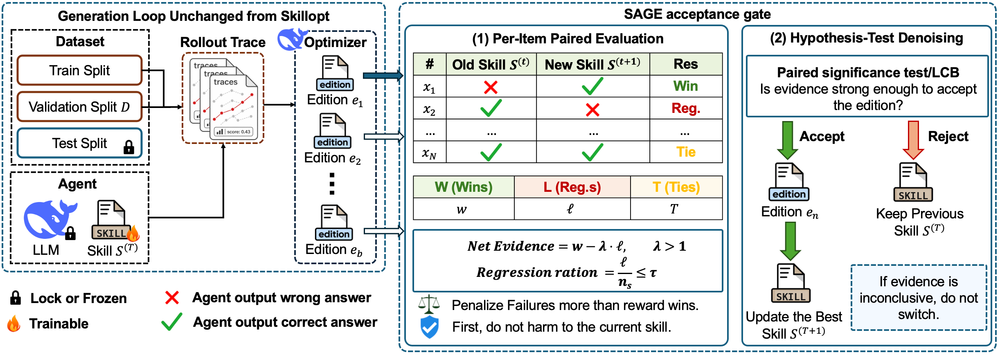

DeepSeek-V4
LiveMath34.15 · 46.58 · 48.78
SSB47.56 · 50.97 · 51.22
SearchQA81.71 · 82.44 · 84.15
OfficeQA32.93 · 40.48 · 45.12
ALFWorld66.58 · 69.92 · 72.92

Test-time skill self-improvement is usually treated as a generation problem: search for a better edit to a natural-language skill. We argue that it is largely a selection problem. Under a small, noisy validation budget, a scalar score difference cannot distinguish a meaningful improvement from an accidental change.
SAGE replaces a greedy acceptance rule with a statistical operator over paired validation evidence. It records per-item wins, losses, and ties, denoises measured gain with an exact one-sided sign test, and accounts for regressions before committing to a candidate. When evidence is insufficient, it abstains and retains the incumbent skill.
All reported results from the paper. Every benchmark, backbone, and method comparison is shown below.
Final score after an equal proposal and token budget. Higher is better. Values below each group follow the legend order.
Across all 20 model–benchmark comparisons, SAGE is the best method and improves over SkillOpt by +8.73 points on average.
Fraction of previously solved validation items broken by an accepted edit. Lower is better. Values follow the legend order.
SAGE lowers the regression rate on every benchmark, often to zero, while preserving or improving the final score.